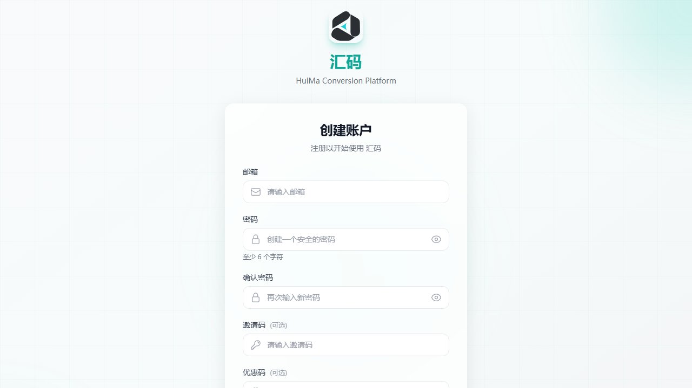
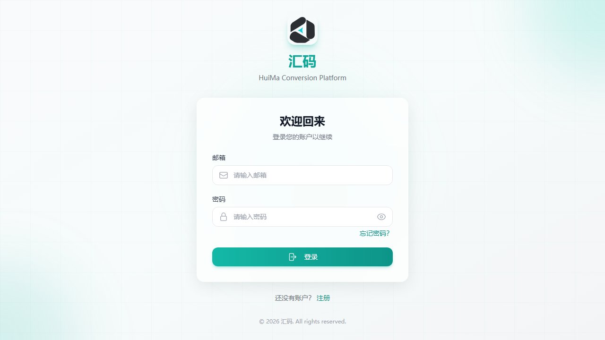
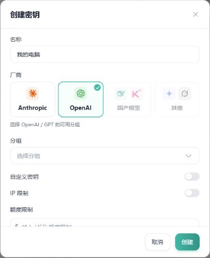
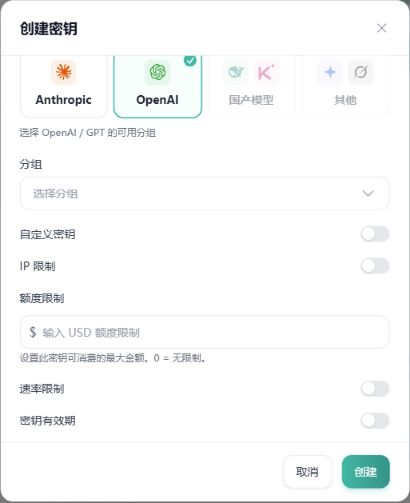

管理账户
网站账号
用邮箱和密码登录汇码，查看余额、管理 Key 和使用记录。
汇码智能 · 使用手册
先准备好账号和 API Key，再按自己的情况选路线。没有技术基础也没关系：新手路线全程点按钮、双击文件就能完成，不需要科学上网。
适合第一次接触的用户。电脑上还没装软件也没关系。
适合已经装好 Claude Code、Codex 或 WorkBuddy 的用户。
管理账户
用邮箱和密码登录汇码，查看余额、管理 Key 和使用记录。
连接服务
网站生成的一串凭证。填进软件后，软件才能调用服务、消耗你的额度。
真正使用 AI
Claude Code、Codex、WorkBuddy 是你用来对话和干活的软件，需要单独安装。
第 1 步 · 准备账号
准备一个能正常收信的邮箱。已有账号就直接登录，不需要重复注册。
在浏览器最上方的地址栏输入 https://api.tysy.top/register，再按回车。不要输进聊天框。
如果先弹出“条款更新通知”，看过条款后点击“同意并继续”。没有同意之前，输入框是灰色的，无法填写。
输入自己的邮箱，设置密码，再在“确认密码”中输入一次相同密码。建议使用至少 12 位、且不与其他网站重复的密码。页面标注“可选”的邀请码没有就留空。
点击“继续”，按页面提示到邮箱查收验证码。填入最新邮件中的验证码，再点击验证按钮。验证码只填在网站验证页面，不要发给他人。
完成后按页面引导进入控制台；如果返回登录页，用刚才的邮箱和密码登录即可。

打开 登录页面，填写邮箱和密码。忘记密码时点击“忘记密码？”，按邮件提示重设。服务条款更新后，登录页会再弹一次条款通知，同意后才能登录。

Windows：选中文字，按 Ctrl+C 复制；点击输入框，按 Ctrl+V 粘贴。Mac 使用 Command+C 和 Command+V。手机可以长按文字或输入框，选择“复制”或“粘贴”。
第 2 步 · 准备账号
登录后进入仪表盘查看余额。注册成功只表示账号已经创建，不代表一定有可用额度。
确认实付人民币金额、到账站内额度、可用模型、有效期及退款规则，不要只看一个数字就付款。
确认充入的是自己的账号。不要向陌生人在群聊里临时发来的收款码付款，客服核对账号不需要你的密码或 API 密钥。
完成后回仪表盘查看余额。未到账时保留凭证，联系原办理客服核查，不要连续重复支付。
进入用户菜单中的兑换 → 粘贴完整兑换码 → 核对来源 → 点击“兑换” → 等待成功提示，再查看余额或对应权益。
兑换码区分大小写，每个码只能使用一次。兑换码也可能对应其他权益，不一定都是余额。出现“无效”或“已使用”时，联系提供兑换码的客服。
第 3 步 · 准备账号
密钥就像软件连接服务的钥匙，可以消耗账户额度。请自己保管，不要发布到群聊、截图或公开代码里。
在用户菜单点击API 密钥，再点击“创建密钥”。手机屏幕较小时，先点左上角菜单按钮。
名称可写“我的电脑”。弹窗里的“厂商”一栏就是用来选 Key 的风格：选 Anthropic 是 Anthropic 风格，选 OpenAI 是 OpenAI 风格。风格和分组决定这把 Key 能用哪些模型、哪些软件，见下方对照表。分组也会影响计费，不确定时先问客服。
向下滚动弹窗，可以查看“额度限制”和“密钥有效期”。不需要时，不要开启自定义密钥或随意填写 IP 限制。
检查风格、分组和限额，再点击“创建”。回到密钥列表，点击密钥旁的复制图标，把完整密钥填入可信客户端的 API Key 栏。


| 要用的软件 | Key 的风格 |
|---|---|
| Claude Code | Anthropic（Claude 模型） |
| Codex | OpenAI（GPT 模型） |
| WorkBuddy | OpenAI 风格（和 Codex 同一种） |
同时要用 Claude Code 和 Codex，就分别创建两把 Key。配置页面会自动检查每把 Key 能用哪些模型，选错了会提示你。
Key 准备好以后，回到选择路线：新手走一键安装和配置，有基础的走 CC Switch 配置。
日常使用
在仪表盘看余额与整体用量，在使用记录查看具体请求。切换日期、密钥或模型筛选时，注意筛选范围。
| 词语 | 简单理解 |
|---|---|
| 输入 | 发给模型的内容，可能包括当前问题、历史对话、文件和软件附加说明。 |
| 输出 | 模型生成的内容；部分模型还可能按规则计入推理用量。 |
| Token | 用于计量内容的单位，不等于汉字数，也不是发消息的次数。 |
| 缓存 | 某些请求可能使用缓存，读写计费规则可能不同，以当前模型规则和账单为准。 |
| 倍率 / 实际消费 | 实际扣费取决于模型、分组、输入输出等规则。一个倍率不能直接说明最终人民币价格，也不能直接当作官方价格的折扣。 |
日常使用
不发到群聊、公开文档或代码仓库。截图前检查 API Key、邮箱和私人对话。客服也不需要你的密码或验证码。
从官方渠道安装。不为接入服务关闭安全软件、系统防护或操作确认。不同设备可以使用不同名称的密钥。
在 API 密钥页面禁用疑似泄露的密钥，再创建新密钥并更新可信客户端。只改网站密码不会自动使旧密钥失效。
遇到问题
先保留报错原文，再按下表检查。错误码只是线索，不一定只有一种原因；反复失败时先停止自动重试。
| 看到什么 | 先检查什么 |
|---|---|
| 网站打不开 / 很慢 | 检查网址拼写和网络，看看其他网站是否正常。如果浏览器提示证书不安全，停止访问并联系网站方，不要强行绕过。 |
| 收不到验证邮件 | 核对邮箱，检查垃圾邮件和全部邮件，使用最新验证码。等倒计时结束后再发送。 |
| 401 / 密钥无效 | 从网站重新复制完整密钥；检查前后空格、填写位置，确认密钥没有被禁用或过期。 |
| 403 / 无权限 | 核对密钥风格、分组、目标模型、有效期以及 IP 限制。不确定时联系客服。 |
| 404 / 模型不存在 | 核对接口类型、Base URL、完整模型 ID，尤其检查是否重复添加 /v1。 |
| 余额不足 / 额度耗尽 | 同时检查账户余额、密钥额度和有效期。账户有余额，也可能是单把密钥达到限制。 |
| 429 / 请求过多 | 停止连续重试，减少同时运行的任务并按提示等待。也可能是容量或配额限制，不要直接认定需要充值。 |
| 5xx / 超时 / 无可用渠道 | 查看渠道状态及网站公告（如有入口）。持续失败时提供出错时间、模型和请求编号。 |
| 已付款但未到账 | 核对登录账号和约定到账方式，保存付款凭证，联系原办理客服，不要重复支付。 |
| 有不认识的消费 | 停止相关客户端任务，禁用疑似泄露的密钥，再核对记录并联系客服。不要只改登录密码。 |
还没有解决？复制下方求助模板。清楚的报错和时间，通常比“不能用了”更方便定位。
遇到问题
网站公开客服 QQ：569229275。联系前请回网站核对最新联系方式，不要仅凭头像或昵称认定对方身份。
使用的软件及版本： 电脑或手机系统： 操作到哪一步： 出错时间： 所选模型和分组： 报错原文： 请求编号（页面有则填写）： 已经尝试过什么： 截图：请先遮住密钥、个人信息和私人对话。
价格、模型、支付开关、按钮名称及可用功能可能更新，请以当前网站和平台说明为准。本页不读取或保存你的 Key，也不进行任何真实调用。